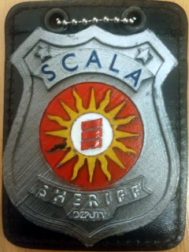
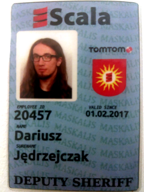
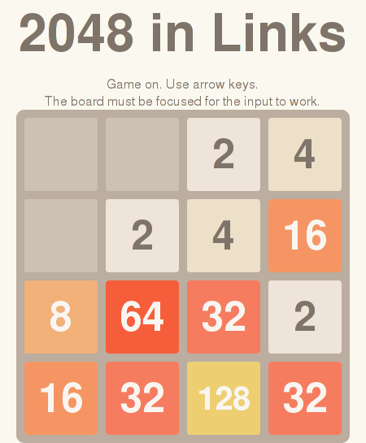
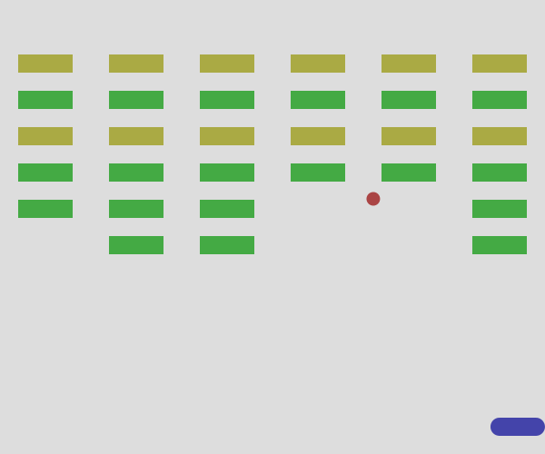
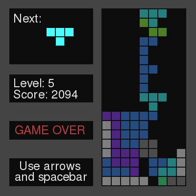
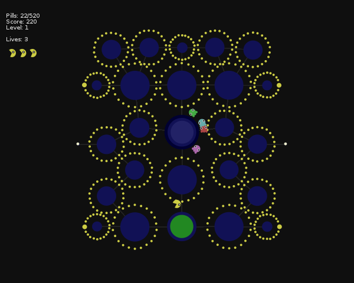
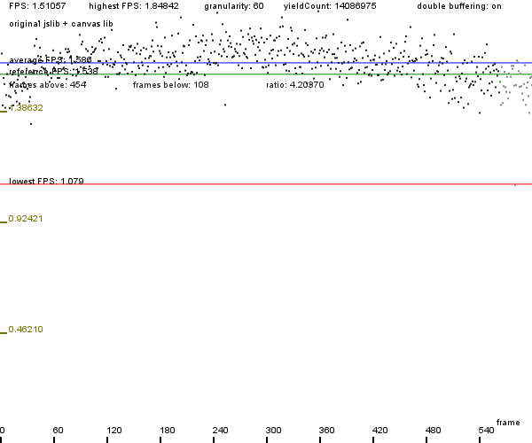
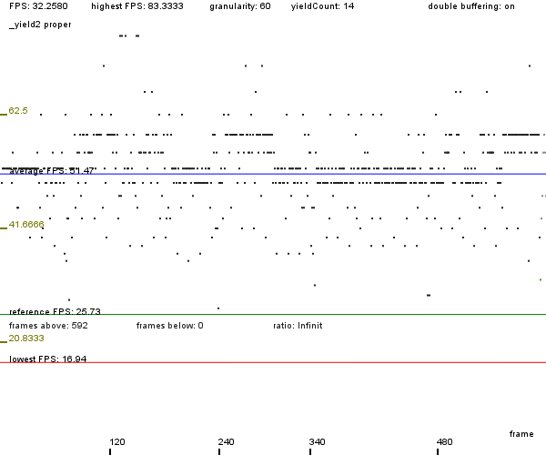

Darius J Chuck / Portfolio
This is a rough list of some of the projects and work I've been involved with.
This list is not complete and may be updated in the future.
Work at ZSiPONTWŁ w Łodzi
- Period: 2024-03 to present
- Description: Teaching future programmers at a technical college (technikum), part-time (weekends). Subjects include website design and publishing with HTML, CSS, CMS systems (Joomla!, WordPress), computer graphics (raster and vector), video and audio editing, database design and administration, using SQL. Software used includes Visual Studio Code, XAMPP (Apache, MySQL/MariaDB, PHP, phpMyAdmin), Microsoft Windows, GIMP, Inkscape, Google Chrome, Mozilla Firefox.

Nauka programowania (teaching programming)
- Period: 2024-02 to present
- URL: https://www.youtube.com/watch?v=ZmcZAioNd5E...
- Description: original programming course from scratch using a refreshed version of the iconic Wizard Book. On YouTube, in Polish.
JDAML – Jevko Data And Markup Language
- Period: 2023-12 to present
- URLs: https://jevko.org/jdaml.html | https://codeberg.org/jevko-org/jdaml
- Description: An experimental XML-like format built on top of Jevko, designed to map equally well to markup-oriented formats (such as HTML or XML) and data-oriented formats (such as JSON or YAML). Design and prototype implementation, including translation to and from HTML, XML, JSON. Design and implementation of formats on top of JDAML which integrate with JavaScript.
Webcomic experiments
- Period: 2023-10 to 2023-12
- Status: suspended
- URLs: https://djedr.github.io/haikomix/ | https://djedr.github.io/haker/
- Description: hand-drawn webcomics.

fitzJSON
- Period: 2023-06 to present
- Status: suspended
- URL: https://github.com/xtao-org/fitzjson
- Description: a JSON-compatible (i.e. a JSON superset) format optimized for configuration. An experiment. Designed the format, drafted a spec, wrote a reference implementation in JavaScript, as well as a grammar for Tree-sitter. Verified ECMA-404 compliance.


Meditating on the Wizard Book and language design
- Period: 2023-02 to 2023-08
- Status: concluded
- URL: https://xtao.org/wizardlang.html
- Description: hand-translated all code from the Wizard Book into a semi-imaginary programming language based on Jevko.

λDNA and LAST
- Period: 2022-08 to present
- URL: https://xtao.org/last.html
- Description: Two extremely minimal programming languages I have created, which are both minimal versions of Alonzo Church’s lambda calculus, inspired by John Tromp’s Binary Lambda Calculus (BLC).


Jevko
- Period: 2021-07 to present
- URL: https://jevko.org
- Description: a versatile minimal syntax for encoding tree-structured information as human-friendly text.

Presentation/interview about Jevko in Polish:
JsonHilo.js
- Period: 2021-06 to present
- URL: https://github.com/xtao-org/jsonhilo
- Description: a minimal library for fast lossless JSON parse event streaming, in pure JavaScript. Akin to SAX. JsonStrum is a related project. Verified ECMA-404 compliance, benchmarked against popular parsers.

Work at Standard Notes
- Period: 2021-02 to 2021-05
- Description:
- Summary: Back-end developer, encrypted note-taking app.
- Job title: Senior Software Engineer
- Roles: Back-end developer (TypeScript).
- Tasks: Auth back-end development, file server implementation, cryptographic library development, multifactor-authentication (TOTP) implementation, API design, bugfixing, code review
- Open-source: yes, GitHub profile
- Company type: small bootstrapped startup
- Team size: < 10
- Methodology: Custom Agile
- Programming disciplines: Object-Oriented, mixed
- Locations: 100% remote
- Time commitment: 24 h/week
- Technologies:
- Languages: TypeScript
- Frameworks and libraries: ExpressJS, superagent, TypeORM, InversifyJS, winston, otplib, ...
- Build tools: webpack
- Environments: Node.js, browser
- Clouds: Amazon Web Services
- Project management: Asana, Twist
- Code editors/IDEs: Visual Studio Code
- Data formats: JSON
- Other tools: Docker, GitHub, Git (+Gitflow), Datadog, ...
- Profilers: web browser built-ins
- Testing: Mocha/Chai, Jest, Istanbul
- Database systems: MySQL
- Operating system: Manjaro Linux
- Other: REST, JSON Web Token, nginx, DBeaver, docker-compose, Prettier, ESLint, DayJS, npm, yarn, semver...
TAO
- Period: 2020-01 to present
- URL: https://xtao.org
- Description: a label under which I publish content related to minimalism in computing – something I cultivate with passion.

Work at TomTom Germany
- Period: 2018-10 to 2019-12
- Description:
- Summary: Full stack development. Mainly back-end. Web applications for data processing and fusion. Internal tools for data visualisation (front-end, back-end, design, architecture).
- Job title: Software Engineer
- Roles: Back-end developer (Scala, Java), main front-end developer (TypeScript).
- Tasks: Development and maintenance of multiple web application back-ends; JSON REST API design and implementation; coordination with other teams, e.g. internal consumers of our APIs; documentation; design, development and optimization of a data-heavy front-end application...
- Team size: < 10
- Methodology: Scrum
- Programming disciplines: Functional, Object-Oriented
- Locations: Berlin, Germany; remote (~10 %)
- Technologies:
- Languages: Scala, Java, TypeScript, Python, HTML, CSS
- Frameworks and libraries: Akka (HTTP, Actors, Streams), Play, Guice, React 16+, Leaflet
- Build tools: Maven, ParcelJS
- Environments: JVM, browser, Node.js
- Clouds: Amazon Web Services, Azure
- Project management: Atlassian suite (Bitbucket, Confluence, JIRA)
- Code editors/IDEs: IntelliJ, Visual Studio Code
- Data formats: JSON, XML
- Other tools: Docker, Kubernetes, Terraform, Sonar, Jenkins, Git (+Gitflow)
- Profilers: VisualVM, honest-profiler, web browser built-ins
- Testing: TestNG, ScalaTest
- Database systems: PostgreSQL, SQLite
- Operating system: Linux (ArchLinux)
- Other: REST, JSON Schema, OpenAPI/Swagger, XML Schema
Work at TomTom Polska
- Period: 2016-02 to 2018-09
- Description:
- Summary: Full-stack development. Front-end with React and Redux. Back-end with Scala and Java. In the beginning assumed role of sole front-end developer in a backend team. In a few months architected and built a front-end of a web application from scratch, whilst learning most of the stack. Later continued work with team of front-end developers. After successful release moved on to new challenge of back-end development in Scala. This involved developing data fusion and processing web applications, some data science and analysis.
- Job title: Software Engineer
- Roles: Main front-end developer (JavaScript), back-end developer (Scala, Java).
- Tasks: Front-end architecture and development. Back-end development.
- Team sizes:
- Project: various, < 10
- Division: 20+
- Methodologies: Scrum
- Locations: Łódź, Poland; remote (~15 %)
- Technologies:
- Languages: Scala, Java, JavaScript, TypeScript, HTML, CSS/SASS/LESS
- Frameworks and libraries: AngularJS, React + Redux, Leaflet
- Build tools: Webpack, Babel, Maven
- Environments: Browser, Node.js, JVM
- Version control: Git
- Code review: Bitbucket
- Code quality: ESLint, Sonar
- Testing: Jest, Nightwatch.js
- Package management: yarn, npm, sbt
- Other: Docker, Amazon Web Services, Azure, Jenkins
- Tools:
- Organization: Confluence
- Project management: Confluence, JIRA
- Code editors/IDEs: IntelliJ, Visual Studio Code + extensions


A very creative surprise goodbye present from my colleagues. Original work, 3D-printed. A nice touch here is the coat of arms with Scala's spiral logo embedded inside a Sun emblem, n.b. designed by me when I first started in a new Scala team.
Work at Mobica Limited
- Period: 2016-02 to 2016-04
- Description:
- Summary: Human-Machine Interface in AngularJS for an application on an embedded system running the WebKit layout engine.
- Job title: Junior Software Engineer
- Roles: JavaScript Developer
- Tasks: Human-Machine Interface application development
- Team sizes:
- Main: ~20
- Other on-site: ~10
- Other teams: remote in-company, remote client's
- Methodologies: Scrum, Waterfall
- Locations: Łódź, Poland
- Technologies:
- Languages: JavaScript, HTML, CSS/SASS
- Frameworks: AngularJS, Bootstrap
- Build tools: gulp
- Environments: Node.js
- Version control: Git
- Code review: Gerrit
- Code quality: JSLint
- Testing: Jasmine, Karma, Protractor
- Package management: npm, Bower
- Other: Docker, Amazon Web Services, Azure, Jenkins
- Tools:
- Organization: Google Docs
- Project management: IBM Rational
- Code editors/IDEs: Brackets, Visual Studio Code
- Hardware: embedded
Work at Samsung Electronics Polska
- Period: 2015-06 to 2015-12
- Description:
- Summary: a big web application, managing data of hundreds of thousands of users. I did mainly front-end – after 3 months becoming the main front-end developer. But not exclusively – wrote some Java and SQL as well.
- Job title: Trainee/Engineer
- Roles: Front-end developer, main frontend-developer
- Team sizes:
- Main: 7-10
- Remote: ~10
- Methodologies: Scrum
- Locations: Łódź, Poland; Warsaw, Poland
- Technologies:
- Languages: JavaScript, HTML, CSS, Java, SQL, Groovy (Gradle)
- Frameworks and libraries: AngularJS, Spring, Bootstrap, jQuery + Flot
- Build tools: gulp, Gradle
- Environments: Node.js
- Database systems: PostgreSQL, MySQL
- Version control: Git
- Code review: Gerrit
- Project management: Confluence, JIRA
- Code quality: SonarQube, JSLint
- Package management: npm, Bower
Internship at University of Edinburgh
- Period: 2014-08 to 2014-09
- Description:
- Summary: worked in the Laboratory for Foundations of Computer Science[1] on an experimental web programming language: Links[2]. "[S]ignificantly speeded up JavaScript compilation in Links and built and evaluated the performance of a number of games written in Links."[3]. I worked with world-class programming language researchers[4] under the supervision of dr James Cheney.
- Role: intern/researcher
- Team size: < 10
- Methodologies: Scrum
- Locations: Edinburgh, Scotland
- Technologies:
- Languages: JavaScript, Haskell, Links, OCaml
- URLs:
- [1] LFCS home page: http://wcms.inf.ed.ac.uk/lfcs/
- [2] Links language's home page: http://links-lang.org/ | http://groups.inf.ed.ac.uk/links/
- [3] See section Interns at http://links-lang.org/
- [4] See section Core team at http://links-lang.org/
- Links language's Github: https://github.com/links-lang/links
- My branch on GitHub: https://github.com/links-lang/links/tree/dariusz
- Notes: See also my Bachelor's thesis. It is largely based on this work.




Master of Engineering Thesis
- Period: 2016-03 to 2016-07
- Title: Dual: a web-based, Pac-Man-complete hybrid text and visual programming language
- Abstract: Designed a programming language, which can have multiple deeply integrated editable representations. Presented a way to combine features of visual languages and text-based languages in a dynamic integrated development environment. Implemented a proof-of-concept interpreter and development environment for the language using web technologies. Presented a practical demonstration of the capabilities as well as a reference for assessing the performance of the implementation.
- Methodologies: exploratory programming
- Languages: JavaScript, Dual
- Environments: Node.js
- URL: http://djedr.github.io/masters_thesis.pdf
Starlight
- Period: 2015, one semester (5 months)
- Description:
- Summary: a VR (virtual reality) game-simulation, which won silver in VR Challenge, 1st edition
- Role: team leader, designer, programmer
- Team size: 3
- Technologies:
- Languages: C#
- Engine: Unity3D
- Hardware: Occulus Rift, Joystick
- URLs:
- GitHub: https://github.com/djedr/starlight
- Competiton's home page: http://vrchallenge.io/?lang=en
- Post-mortem report in Polish: https://docs.google.com/document/d/1eQe...
A web application for an early-stage start-up
- Period: 2015-04 to 2016-10
- Description:
- Role: design, architecture and implementation of the application
- Team size: 4
- Technologies:
- Languages: JavaScript, HTML, CSS/PostCSS, SQL
- Frameworks: AngularJS, Angular 2, LoopBack, Express, Bootstrap
- Libraries: lodash, jQuery, Socket.IO
- Middleware: Passport
- Environments: Node.js
- Database systems: PostgreSQL
- Build tools: gulp, Grunt
- Testing: Jasmine, Karma, Protractor
- Package management: npm, Bower
Bachelor of Engineering Thesis
- Period: 2015, one semester (5 months)
- Title: Optimizing Links, a functional programming language that compiles to JavaScript, for computer games
- Abstract: [E]xplores the subjects of web game programming in the functional paradigm and programming language optimization. A few simple web games are implemented in the the experimental functional programming language Links. Optimizations are introduced to the language to improve performance. A benchmark application is implemented to quantify their effectiveness.
- URL: http://djedr.github.io/bachelors_thesis.pdf
- Notes: See also my work on the Links programming language at University of Edinburgh. It is the basis of this thesis.


Mimus Dei
- Period: 2014, one semester (5 months)
- Description:
- Summary: a computer game, which won the Team Computer Game Development Competition, 6th edition. Project involved design and implementation of a game engine in C# on top of Microsoft's XNA framework and design and implementation of a game on top of that.
- Role: one of the main programmers, team vice-leader, scrum master responsibilites
- Team size: 6
- Methodology: Scrum
- Technologies:
- Languages: C#, HLSL
- Frameworks: XNA
- IDEs/code editors: Visual Studio + ReSharper
- Version control: Perforce
- URLs:
- Competition summary: http://gry.it.p.lodz.pl/okonkursie/edycja2014
- Information about the game and the team, binaries, press info: http://bit.ly/mimusdei